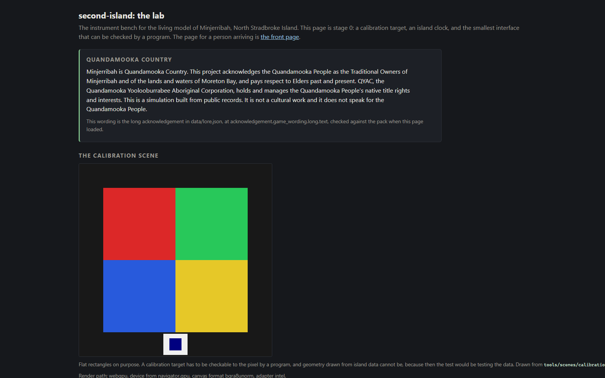

Second build · second-island
The second build started clean on 18 August 2026. It wrote its checking tools first, then broke copies of itself to watch each tool catch the break.
Copernicus Sentinel-2, 13 July 2026 · sources
Stage 0
A digital twin is a computer model of a real place that shows where every number came from. Minjerribah's second twin is called second-island.
A checker is a small program that reads the build and reports faults. A fault is a break switched on by name. One makes a part read the real clock.
The self-test runs each checker twice per fault: a good copy, then a broken one. A catch counts only if the checker passed clean, failed broken and named the break.
One file lists which checker owns which claim, and which breaks nothing catches. One blind spot: a mobile number in the sealed inbox, where the personal-data rule does not scan. From the Stage 0 file: "'Exists, untested' is an acceptable row. 'Works' without a receipt is not."
Runs the whole island in a terminal. Fails loud on any error or blown budget.
Runs the world twice from one seed. Names the first tick that differed.
Checks the test picture pixel by pixel. It misses a renamed label: a picture cannot read words.
Times each frame against a budget. Reports the slow end and the worst frame, never the average.
Every panel needs a name. Every number must point at a record on disk.
Runs fourteen rule checks over the files. A broken rule blocks the build.
One note per file. A finding that lives only in a chat counts as never made.
The checker that checks the checkers. It writes down what each one caught.
The kernel
The kernel is the core everything runs on: the clock, the store of facts, the random numbers.
The same seed gives the same island on anyone's machine.
The README records a simulated year running in a terminal in 0.144 seconds, about one blink.
The record
A record is one fact: a departure time, a jetty, a bus call, a tide reading. The kernel refuses one missing any of the eight.
| Field | What it means |
|---|---|
| source | An id from the build's source list, nothing else. |
| locator | Page, column or web address. Enough to check the claim. |
| valid from | When it became true on the island. |
| valid to | When it stopped being true. Empty means still true. |
| recorded at | When the twin learned it. |
| recorded until | When a newer belief replaced it. Empty means current. |
| confidence | High, medium, low, contested or unknown. |
| register | Known, modelled, proposed or contributed. |
"Valid" is island time, when the thing was so. "Recorded" is twin time, when the twin believed it. A store that overwrites cannot show what Tuesday saw after Thursday corrects it.
One record in the crossings pack. The SeaLink vehicle barge leaves Junner Street, Dunwich, at 17:30 on the vessel marked SB.
The old record stays and gets a "recorded until" date. A new record goes in with the new time. A break named correction-overwrites tries to overwrite instead, and the store caught it.
The 19 August times also have a seal: a second copy of every time, vessel code and day rule. Change a time and the build stops until the pack, the typed copy and the seal agree.
The source ladder
A panel does not take the first figure it finds. Each field has its own ladder.
An old reading drops a rung, so a stale official reading ranks where a model would. Each field sets its own use-by: a tide reading ages faster than a bus timetable. From the ladder file: "The bottom rung never wins in live mode."
The ladder gives back a value with its rung, source and date, or "not known" with the date and reason. No panel prints "not known" as a number.
Harmonic constituents are the numbers behind a port's rising and falling tide. Nobody has found a published table for Dunwich, so the tide pack ships none. The tide panel reads "contested or unknown" with the date. Anything below the confidence bar prints no number.
The gate
The gate reads every file and flags broken rules. A blocking flag stops the build. An advisory flag prints. From the contract: "A rule that is not in the gate does not exist."
The gate ran on 20 August 2026. It reported "PASS: 0 blocking, 15 advisory", all fifteen already known.
The lab

The lab is the test bench: the test picture, the island clock, the sun and tide panels. A test picture has known colours at known points, so a program can check what was drawn. From the lab page: "Flat rectangles on purpose." Draw island data there and the test starts testing the data.
Two frames from different ticks must differ at the swatch. That is how the shot check spots a frozen picture.
A picture cannot read labels, so two witnesses check the screen. The page reports every panel and value. A screen reader's list of named parts is checked against it. On 20 August 2026 the shot check passed 6 of 6 points, the probe 10 rules over 8 panels and 28 values.
Until 20 August 2026 the bench was the front page. It moved to lab.html so a visitor meets the ferry question first. Every checker was repointed.
Today
Open it: the live page and the repository. Open them yourself has the one command for your machine.